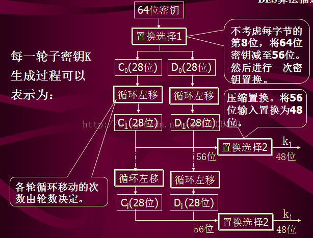
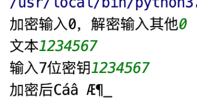
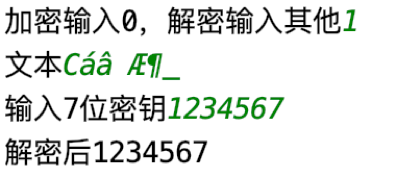

DES加密算法
历经千辛万苦终于完成了DES加密算法python版本的复现！
同时感谢冯二阳家的刘小洋的初始版本python代码！
首先，DES加密需要用户提供7位密钥。将其转化为二进制共有7*8=56比特，每7比特生成一个奇偶校验码作为第八位，这样就形成了64比特的密钥。然后对这64比特密钥进行一次IP置换，将奇偶校验位去掉，同时打乱这些比特的顺序，这样就又回到了56比特密钥。详细过程见下图（来自：https://blog.csdn.net/u013005150/article/details/25804787）
密钥生成算法如下：
def create_keys(in_keys):
"""生成每一轮的key"""
b = []
ascii_key = char2unicode_ascii(in_keys)
bit_key = ascii2bit(ascii_key)
for i in range(8):
a = bit_key[i * 7:i * 7 + 7]
b.append(a.count(1) % 2)
for i in range(8):
bit_key.insert((i + 1) * 7 + i, b[i])
key = []
# ascii_key = char2unicode_ascii(in_keys)
# bit_key = ascii2bit(ascii_key)
# print(bit_key)
key0 = [0 for i in range(56)]
key1 = [0 for i in range(48)]
# PC1变换（64bit->56bit）
for i in range(56):
key0[i] = bit_key[table.yasuo1_table[i] - 1]
# 确定每轮移位次数
for i in range(16):
# 1，2，9，16循环左移一次
if (i == 0 or i == 1 or i == 8 or i == 15):
move = 1
else:
move = 2
# 移位操作
for j in range(move):
# 每8bit左移一次
for k in range(8):
temp = key0[k * 7]
for m in range(7 * k, 7 * k + 6):
key0[m] = key0[m + 1]
key0[k * 7 + 6] = temp
temp = key0[0]
#每28bit左移一次
for k in range(27):
key0[k] = key0[k + 1]
key0[27] = temp
temp = key0[28]
for k in range(28, 55):
key0[k] = key0[k + 1]
key0[55] = temp
# PC2变换（56bit->48bit）
for k in range(48):
key1[k] = key0[table.yasuo2_table[k] - 1]
key.extend(key1)
return key然后就可以将明文分为n份，每份64比特，不足补空格。分别进行15轮需要交叉互换的f函数，最后进行一轮不交叉互换的f函数。最好是把最后一轮放在外面，而不是16轮交叉互换，最后再交叉互换一下，因为节约成本。里面扩展置换什么的就是给你个表格，你按照表格里的数字去你的列表里找这个位置的数据然后填进这个表格。
def des(text, key, type):
if type == 0: # 加密
a = 0
b = 15
c = 1
# d = 15
else:
a = 15
b = 0
c = -1
# d = 0
key = create_keys(key)
finalTextOfBit = [0 for i in range(64)]
finalTextOfUnicode = [0 for i in range(4)]
tempText = [0 for i in range(64)] # IP逆置换之前结果
extendR = [0 for i in range(48)] # 右边明文E扩展结果
unicodeText = char2unicode_ascii(text)
if type == 0: #加密
bitText = ascii2bit(unicodeText)
else:
# unicodeText = [169, 134, 156, 247, 82, 9, 222, 8]
bitText = ascii2bit(unicodeText)
initTrans = [0 for i in range(64)] # 初始化，用于存放IP置换后的结果,64
# 初始IP置换
for i in range(64):
initTrans[i] = bitText[table.IP_table[i] - 1]
# 分为左右两部分
L = [initTrans[i] for i in range(32)]
R = [initTrans[i] for i in range(32, 64)]
# 16轮
for i in range(a, b, c):
tempR = R # 放最初的右明文
# E扩展置换（32bit->48bit)
for j in range(48):
extendR[j] = R[table.extend_table[j] - 1]
# 本轮key值
keyi = [key[j] for j in range(i * 48, i * 48 + 48)]
# 与key值进行异或
XORResult = [0 for j in range(48)]
for j in range(48):
XORResult[j] = keyi[j] ^ extendR[j]
# S盒替换
SResult = [0 for k in range(32)]
for k in range(8):
row = XORResult[k * 6] * 2 + XORResult[k * 6 + 5]
column = XORResult[k * 6 + 1] * 8 + XORResult[k * 6 + 2] * 4 + XORResult[k * 6 + 3] * 2 + XORResult[
k * 6 + 4]
temp = table.S[k][row * 16 + column]
for m in range(4):
SResult[k * 4 + m] = (temp >> m) & 1
# P盒置换
PResult = [0 for k in range(32)]
for k in range(32):
PResult[k] = SResult[table.P_table[k] - 1]
# 与L部分异或
XORWithL = [0 for k in range(32)]
for k in range(32):
XORWithL[k] = L[k] ^ PResult[k]
# L_i = R_(i-1)
L = tempR
R = XORWithL
if type == 0:
i = i+1
else:
i = i-1
tempR = R # 放最初的右明文
# E扩展置换（32bit->48bit)
for j in range(48):
extendR[j] = R[table.extend_table[j] - 1]
# 本轮key值
keyi = [key[j] for j in range(i * 48, i * 48 + 48)]
# 与key值进行异或
XORResult = [0 for j in range(48)]
for j in range(48):
XORResult[j] = keyi[j] ^ extendR[j]
# S盒替换
SResult = [0 for k in range(32)]
for k in range(8):
row = XORResult[k * 6] * 2 + XORResult[k * 6 + 5]
column = XORResult[k * 6 + 1] * 8 + XORResult[k * 6 + 2] * 4 + XORResult[k * 6 + 3] * 2 + XORResult[
k * 6 + 4]
temp = table.S[k][row * 16 + column]
for m in range(4):
SResult[k * 4 + m] = (temp >> m) & 1
# P盒置换
PResult = [0 for k in range(32)]
for k in range(32):
PResult[k] = SResult[table.P_table[k] - 1]
# 与L部分异或
XORWithL = [0 for k in range(32)]
for k in range(32):
XORWithL[k] = L[k] ^ PResult[k]
R = tempR
L = XORWithL
tempText = L
tempText.extend(R)
# IP逆置换
for k in range(64):
finalTextOfBit[k] = tempText[table._IP_table[k] - 1]
if type == 0: #加密
finalTextOfUnicode = bit2ascii(finalTextOfBit)
else:
finalTextOfUnicode = bit2ascii(finalTextOfBit[0:16])
finalTextOfChar = unicode_ascii2char(finalTextOfUnicode)
return finalTextOfChar最后是主函数
import f
optionType = input("加密输入0，解密输入其他")
text = input("文本")
length = len(text)
Result = ""
if optionType == '0':
# 若输入文本的长度不是4的整数倍，即不是64字节的整数倍，用空格补全（此处为了加密中文，用的是unicode编码，
# 即用16字节表示一个字符）
text = text + (8 - length % 8) * " "
length = len(text)
key = input("输入7位密钥")
while (len(key) != 7):
print("7位！")
key = input("输入7位密钥")
for i in range(int(length / 8)):
#一次读入64个字节
tempText = [text[j] for j in range(i * 8, i * 8 + 8)]
Result = Result + f.des(tempText, key, int(optionType))
print("加密后" + Result)
if optionType != '0':
length = len(text)
key = input("输入7位密钥")
while (len(key) != 7):
print("7位！")
key = input("输入7位密钥")
for i in range(int(length / 8)):
tempText = [text[j] for j in range(i * 8, i * 8 + 8)]
Result = Result + f.des(tempText, key, int(optionType))
print("解密后" + Result)然后一堆置换表和字符串转化为ascii、unicode再转二进制，或者二进制转字符串什么的函数
import table
def char2unicode_ascii(in_text):
"""将字符串转化为unicode码，即整数"""
out_put = []
for i in range(len(in_text)):
out_put.append(ord(in_text[i]))
return out_put
def unicode2bit(in_text):
"""将16位unicode码转化为bit"""
out_bit = []
for i in range(len(in_text) * 16):
out_bit.append((in_text[int(i / 16)] >> (i % 16)) & 1)
return out_bit
def ascii2bit(in_char):
"""将8位ASCII码转为bit"""
out_bit = []
for i in range(len(in_char) * 8):
out_bit.append((in_char[int(i / 8)] >> (i % 8)) & 1) # 等同于一次左移一bit
return out_bit
def bit2unicode(in_bit):
"""将bit转为ascii 码"""
out_put = []
temp = 0
for i in range(len(in_bit)):
temp = temp | (in_bit[i] << (i % 16))
if i % 16 == 15:
out_put.append(temp)
temp = 0
return out_put
def bit2ascii(in_bit):
"""将bit转化为ascii"""
out_put = []
temp = 0
for i in range(len(in_bit)):
temp = temp | (in_bit[i] << (i % 8))
if i % 8 == 7:
out_put.append(temp)
temp = 0
return out_put
def unicode_ascii2char(in_byte):
"""将unicode,ascii码转为字符"""
out_text = ""
for i in range(len(in_byte)):
out_text = out_text + chr(in_byte[i])
return out_text
# IP置换表
IP_table = [58, 50, 42, 34, 26, 18, 10, 2,
60, 52, 44, 36, 28, 20, 12, 4,
62, 54, 46, 38, 30, 22, 14, 6,
64, 56, 48, 40, 32, 24, 16, 8,
57, 49, 41, 33, 25, 17, 9, 1,
59, 51, 43, 35, 27, 19, 11, 3,
61, 53, 45, 37, 29, 21, 13, 5,
63, 55, 47, 39, 31, 23, 15, 7
]
# 逆IP置换表
_IP_table = [40, 8, 48, 16, 56, 24, 64, 32,
39, 7, 47, 15, 55, 23, 63, 31,
38, 6, 46, 14, 54, 22, 62, 30,
37, 5, 45, 13, 53, 21, 61, 29,
36, 4, 44, 12, 52, 20, 60, 28,
35, 3, 43, 11, 51, 19, 59, 27,
34, 2, 42, 10, 50, 18, 58, 26,
33, 1, 41, 9, 49, 17, 57, 25
]
# S盒中的S1盒
S1 = [14, 4, 13, 1, 2, 15, 11, 8, 3, 10, 6, 12, 5, 9, 0, 7,
0, 15, 7, 4, 14, 2, 13, 1, 10, 6, 12, 11, 9, 5, 3, 8,
4, 1, 14, 8, 13, 6, 2, 11, 15, 12, 9, 7, 3, 10, 5, 0,
15, 12, 8, 2, 4, 9, 1, 7, 5, 11, 3, 14, 10, 0, 6, 13
]
# S盒中的S2盒
S2 = [15, 1, 8, 14, 6, 11, 3, 4, 9, 7, 2, 13, 12, 0, 5, 10,
3, 13, 4, 7, 15, 2, 8, 14, 12, 0, 1, 10, 6, 9, 11, 5,
0, 14, 7, 11, 10, 4, 13, 1, 5, 8, 12, 6, 9, 3, 2, 15,
13, 8, 10, 1, 3, 15, 4, 2, 11, 6, 7, 12, 0, 5, 14, 9
]
# S盒中的S3盒
S3 = [10, 0, 9, 14, 6, 3, 15, 5, 1, 13, 12, 7, 11, 4, 2, 8,
13, 7, 0, 9, 3, 4, 6, 10, 2, 8, 5, 14, 12, 11, 15, 1,
13, 6, 4, 9, 8, 15, 3, 0, 11, 1, 2, 12, 5, 10, 14, 7,
1, 10, 13, 0, 6, 9, 8, 7, 4, 15, 14, 3, 11, 5, 2, 12
]
# S盒中的S4盒
S4 = [7, 13, 14, 3, 0, 6, 9, 10, 1, 2, 8, 5, 11, 12, 4, 15,
13, 8, 11, 5, 6, 15, 0, 3, 4, 7, 2, 12, 1, 10, 14, 9,
10, 6, 9, 0, 12, 11, 7, 13, 15, 1, 3, 14, 5, 2, 8, 4,
3, 15, 0, 6, 10, 1, 13, 8, 9, 4, 5, 11, 12, 7, 2, 14
]
# S盒中的S5盒
S5 = [2, 12, 4, 1, 7, 10, 11, 6, 8, 5, 3, 15, 13, 0, 14, 9,
14, 11, 2, 12, 4, 7, 13, 1, 5, 0, 15, 10, 3, 9, 8, 6,
4, 2, 1, 11, 10, 13, 7, 8, 15, 9, 12, 5, 6, 3, 0, 14,
11, 8, 12, 7, 1, 14, 2, 13, 6, 15, 0, 9, 10, 4, 5, 3
]
# S盒中的S6盒
S6 = [12, 1, 10, 15, 9, 2, 6, 8, 0, 13, 3, 4, 14, 7, 5, 11,
10, 15, 4, 2, 7, 12, 9, 5, 6, 1, 13, 14, 0, 11, 3, 8,
9, 14, 15, 5, 2, 8, 12, 3, 7, 0, 4, 10, 1, 13, 11, 6,
4, 3, 2, 12, 9, 5, 15, 10, 11, 14, 1, 7, 6, 0, 8, 13
]
# S盒中的S7盒
S7 = [4, 11, 2, 14, 15, 0, 8, 13, 3, 12, 9, 7, 5, 10, 6, 1,
13, 0, 11, 7, 4, 9, 1, 10, 14, 3, 5, 12, 2, 15, 8, 6,
1, 4, 11, 13, 12, 3, 7, 14, 10, 15, 6, 8, 0, 5, 9, 2,
6, 11, 13, 8, 1, 4, 10, 7, 9, 5, 0, 15, 14, 2, 3, 12
]
# S盒中的S8盒
S8 = [13, 2, 8, 4, 6, 15, 11, 1, 10, 9, 3, 14, 5, 0, 12, 7,
1, 15, 13, 8, 10, 3, 7, 4, 12, 5, 6, 11, 0, 14, 9, 2,
7, 11, 4, 1, 9, 12, 14, 2, 0, 6, 10, 13, 15, 3, 5, 8,
2, 1, 14, 7, 4, 10, 8, 13, 15, 12, 9, 0, 3, 5, 6, 11
]
# S盒
S = [S1, S2, S3, S4, S5, S6, S7, S8]
# P盒
P_table = [16, 7, 20, 21,
29, 12, 28, 17,
1, 15, 23, 26,
5, 18, 31, 10,
2, 8, 24, 14,
32, 27, 3, 9,
19, 13, 30, 6,
22, 11, 4, 25
]
# 压缩置换表1，不考虑每字节的第8位，将64位密钥减至56位。然后进行一次密钥置换。
yasuo1_table = [57, 49, 41, 33, 25, 17, 9,
1, 58, 50, 42, 34, 26, 18,
10, 2, 59, 51, 43, 35, 27,
19, 11, 3, 60, 52, 44, 36,
63, 55, 47, 39, 31, 23, 15,
7, 62, 54, 46, 38, 30, 22,
14, 6, 61, 53, 45, 37, 29,
21, 13, 5, 28, 20, 12, 4
]
# 压缩置换表2，用于将循环左移和右移后的56bit密钥压缩为48bit
yasuo2_table = [14, 17, 11, 24, 1, 5,
3, 28, 15, 6, 21, 10,
23, 19, 12, 4, 26, 8,
16, 7, 27, 20, 13, 2,
41, 52, 31, 37, 47, 55,
30, 40, 51, 45, 33, 48,
44, 49, 39, 56, 34, 53,
46, 42, 50, 36, 29, 32
]
# 用于对数据进行扩展置换，将32bit数据扩展为48bit
extend_table = [32, 1, 2, 3, 4, 5,
4, 5, 6, 7, 8, 9,
8, 9, 10, 11, 12, 13,
12, 13, 14, 15, 16, 17,
16, 17, 18, 19, 20, 21,
20, 21, 22, 23, 24, 25,
24, 25, 26, 27, 28, 29,
28, 29, 30, 31, 32, 1
]最后的结果

